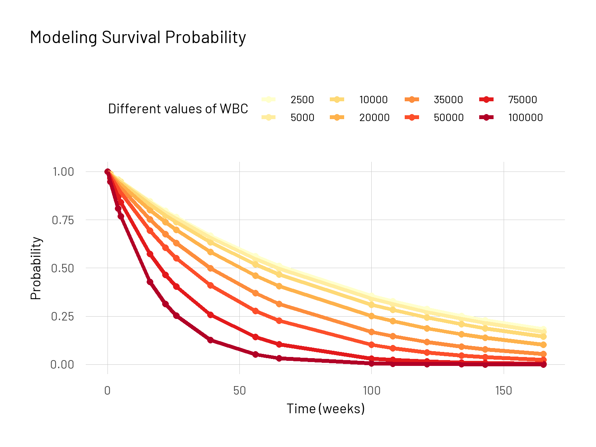
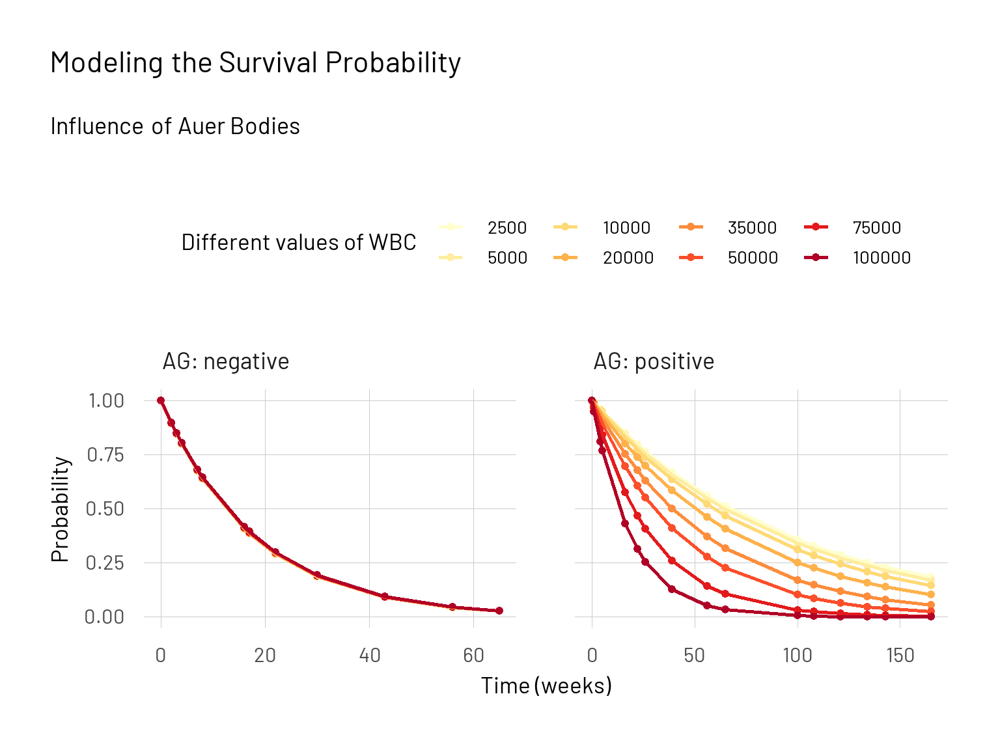

How to model exponential survival probabilities using maximum likelihood from scratch
This post will be about surviving. To be more specific about probabilities of surviving up to a time point \(t\). The field of survival analysis is quite interesting and although there is a strong connection to the field of epidemiology and medicine, survival can also stand for a variety of things like mechanical parts “surviving” up to a certain point or predicting the point in time up to when housing loans are being paid back. I was glad to see a new package {censored} joining the tidymodels family incorporating different survival engines. Now we will turn to the beginnings of this field and see what one of the first regression models for survival data looked like.
The influential paper of Feigl and Zelen (1965) is about the estimation of exponential survival probabilities with concomitant information. That means they estimated survival distributions when the survival times are assumed to follow an exponential distribution where the parameters were influenced by a covariate. In their work they applied these methods on data of deceased leukemia patients. I will give a summary of their paper and afterwards reproduce some of it in R using an alternative model.
The paper by Feigl and Zelen (1965) published in the journal Biometrics deals with a statistical model for estimating the survival time of cancer patients. In particular, they studied data from patients with leukaemia. Leukaemia develops in the cells of the bone marrow and is usually characterised by a large increase in the number of white blood cells in the blood. During the course of the disease, there is a constant increase in the concentration of white blood cells, which indicates its severity. When it comes to predicting the survival time of patients, information on the amount of white blood cells as well as other indicators of disease progression is crucial. In their paper, Feigl and Zelen (1965) discuss a method for modelling survival times based on an exponential distribution whose parameters depend on these indicators. It is therefore a parametric model with the white blood cell count as a covariate. In addition, the survival curves of two different patient groups are compared. One group has Auer bodies in their cells and the other group does not.
To estimate the parameters of the model, they use the maximum likelihood method. In what follows, I will discuss the statistical model and its methodology in more detail. I also describe in more detail the data and their approach, as well as the conclusions the authors draw at the end. What do their results mean and what alternative models could be applied in this area?
The objective of the two authors is to predict the probability of survival at a time \(t\) of patients with leukaemia. The survival time variable follows an exponential distribution whose parameters depend on variables such as the number of white blood cells. The probability density function of this survival time can be represented as follows:
\[ \begin{aligned} f_i(t) &= \lambda_i \ exp(-\lambda_i t) \; \; for \; \; t \geqslant 0 \\ &= 0 \; \; \; \; \; \; \; \; \; \; \; \; \; \; \; \; \; \; \ \ for \; \; t < 0 \end{aligned} \]
The parameter \(\lambda\) is then dependent on another variable \(x\) which determines the expected value of the survival time of the patient: \(E(t_i) = \frac{1}{\lambda_i} = a + b x_i\).
Thus, the parameter \(\lambda_i^{-1}\) results from the equation resembling the classical linear regression of \(a + bx_i\). In order to estimate the two parameters \(a\) and \(b\), the maximum likelihood method is applied. The likelihood function is as follows:
\[ \begin{aligned} l(a, b) &= \prod_{i=1}^n f_i(t_i) = \prod_{i=1}^n \lambda_i \ exp(-\lambda_i t) \\ &= (\prod_{i=1}^n (a + bx_i)^{-1}) (exp - \sum_{i=1}^n t_i(a + bx_i)^{-1}) \end{aligned} \]
Classically, this function is logarithmised to facilitate its use. To estimate the two parameters, the partial derivatives \(\frac{\partial L}{\partial a}\) and \(\frac{\partial L}{\partial b}\) are now set to \(0\). The solution is obtained using the Taylor series. Here, these two equations are expanded in first order terms. Then, the two parameters \(\hat a\) and \(\hat b\) are estimated, respecting the constraint that \(\hat a + \hat bx_i > 0\) for all \(x_i\) since the parameter \(\lambda\) can only be positive. Finally, the estimated parameters are used to calculate the probability of survival of patient \(i\). It is presented as follows:
\[ S_i(t) = \int_t^{\infty} f_i(\xi) \, d \xi = exp (- \lambda_i t) = exp \ [-t(a + bx_i)^{-1}] \]
As a quality criterion for their estimation, the authors examined the expected and estimated number of patient deaths in specific time intervals \(t_i(p)\). The intervals of \(p\) were chosen as quartile probabilities \(p = (0.25, 0.5, 0.75)\).
\[ \hat S_i[t_i(p)] = exp \ [-t_i(p)(\hat a + \hat bx_i)^{-1}] = p \]
A \(\chi^2\) test (in this case with 2 degrees of freedom) can then be performed to compare the observed and estimated numbers for the specified intervals.
Now that the theoretical statistical model has been presented, let us move on to the application. As described earlier, this is uncensored data on patients who died of leukaemia. The \(33\) patients are divided into two groups according to the presence (AG Positive, \(n = 17\)) or absence (AG Negative, \(n = 16\)) of Auer bodies in the cytoplasm of their cells. Auer bodies or rods are found in about 30% of cases in myeloid leukaemia and may increase the probability of a complete remission rate (Seymour and Estey 1993). The time to death of patients is given in weeks. The accompanying variable \(x\) is the white blood cell count (\(wbc\)) at diagnosis. This means that this variable is considered to be independent of time.
Looking at the data, it appears that patients in the GA positive group have a lower number of \(wbc\) and a significantly longer survival time on average than patients in the GA negative group. When estimating the parameters \(a\) and \(b\) for each group, the following values were obtained using the presented method.
| Patient Group | a | b | sd a | sd b |
|---|---|---|---|---|
| AG positive | 240 | -44 | 95.5 | 20.1 |
| AG negative | 30 | -3 | 35.1 | 8.2 |
By testing their model, they were able to show that the fit was adequate. The maximum difference between the observed survival probabilities and the estimated mean is 12%. The most interesting finding made by the authors concerns the division between the two groups. For the first AG positive group, the survival probability depends very strongly on the variable \(wbc\). For the second group, there is only a weak relationship. This relationship is also very well reflected in the different values of \(b\). The higher \(|b|\) is, the greater the influence of the variable. The authors’ two-sided test revealed a significant difference between the parameters of the two groups.
Feigl and Zelen (1965) were able to show in their work that they can predict survival time with different exponential distributions as a function of one or possibly several variables. They were the first to perform a regression analysis of exponentially distributed survival times (Klein, Andersen, and Keiding 2014). This is a definite improvement over previous methods. However, there were some aspects that simplified their model. First, they treated the variable \(wbc\) as time independent, recorded at the beginning of diagnostic analysis. For a more realistic model, this variable should be considered as time-dependent, as the number of white blood cells changes during the course of the disease. Another aspect is the fact that only data from patients who have already died were analysed. A year later, in the same journal, Zippin and Armitage (1966) applied and extended Feigl and Zelen’s approach to data that had been right censored.
Through their analysis, Feigl and Zelen were able to identify three important use cases.
The comparison of survival curves incorporating different variables and medical information.
Predicting survival probabilities of individual patients based on different variables.
Evaluation of survival data from clinical trials.
This last point seems to be the most important. It is a step forward if more in-depth information on patients can be included in clinical trials. In this way, the effects of treatments can be seen much more clearly. At the end of their work, they also show how other formulations of a model could arise. The first variant is \(E(t_i) = (a + bx_i)^{-1}\). This has the advantage that \(a\) can be considered independent and in this case we only test the hypothesis that \(b = 0\). Another alternative is the formulation \(E(t_i) = ae^{bx_i}\). Here it is assumed that the logarithm of the average survival time can be considered as a linear function of the variable \(x\). I have used this model to reproduce the authors’ results.
In conclusion, the authors’ contribution has advanced the field of survival analysis. Nevertheless, it must be said that the exponential distribution has found limited use in biomedical applications, as its lack of aging property is too restrictive for most problems. Here, for example, the Weibull distribution has clear advantages because it not only allows a constant hazard rate.
I present here the code and calculations with which the results of Feigl and Zelen (1965) have been reproduced. It is the following alternative model:
\[ \begin{aligned} E(t_i) &= ae^{bx_i} \\ &= ae^{bd_i} \; \; with \; \; d_i = x_i - \overline{x} \end{aligned} \]
# Required library
library(tidyverse)
plotutils::set_custom_theme(base_size = 26)
In their paper, the authors work with a data sample of leukemia patients with information about their white blood cell count (\(x\)) and the survival time in weeks (\(t\)) from date of diagnosis. Here we have \(n = 17\) data points of group 1 and their respective survival times. The number is quite small, but it serves only as a demonstration.
To obtain parameter estimates the maximum likelihood method is applied. This method maximizes the joint probability density function with respect to a certain distribution. It then computes the estimate of the population parameter value that is the optimal fit to the observed data. The maximum likelihood here can be written as follows:
\[ L(a, b) = -n \; log \; a - \sum_i \frac{t_ie^{-bd_i}}{a} \]
Now the parameters have to be estimated. First we solve for an estimate for \(\hat b\). Afterwards we can use the result to receive an estimate for \(\hat a\):
\[ \begin{aligned} \frac{\partial L}{\partial b} &= 0 = \sum_{i = 1}^n t_id_ie^{- \hat bd_i} \\ \hat a &= \sum_{i = 1}^n \frac{t_ie^{-\hat bd_i}}{n} \end{aligned} \]
For the calculation of \(\hat b\), we’ll use the Newton Raphson method. It is a root-finding algorithm that can be applied iteratively. The idea is to start with an initial guess, then to approximate the function by its tangent line, and finally to compute the x-intercept of this tangent line. \(\hat{b}_k\) is the estimate at the \(k\)th iteration.
\[ \hat{b}_{k + 1} = \hat{b}_k - \phi(\hat{b}_k) / \phi'(\hat{b}_k) \]
In our case the we are interested in the function \(\phi(\hat{b})\) as well as the first derivative \(\phi'(\hat{b})\).
\[ \begin{aligned} \phi(\hat{b}) &= \sum_{i = 1}^n t_id_ie^{-\hat{b}d_i} \\ \phi'(\hat{b}) &= - \sum_{i = 1}^n t_id_i^2 e^{-\hat b d_i} \end{aligned} \]
A first estimate of \(\hat b\) is obtained as follows.
\[ \hat b_0 = \sum_{i = 1}^n d_i \;log\; t_i \; / \;\sum_{i = 1}^n d_i^2 \]
After that, we can then calculate \(\hat a\).
The survival function is then as already described above as follows:
\[ S(t) = exp(-t \; (ae^{bd})^{-1}) \]
We are looking at different values for the white blood cell count variable so that we can compare survival probability curves.
Now we apply our survie function and plot the result.
s_df_1 <- tibble(s = unlist(map(d_values, survie)),
wbc = rep(x_values, each = length(x)),
t = rep(t, length(d_values))) |>
bind_rows(tibble(s = rep(1, length(x_values)), # Starting values:
t = rep(0, length(x_values)), # t = 0 -> s = 1
wbc = x_values)) |>
mutate(ag = "AG: positive")
# Create the plot
ggplot(s_df_1, aes(x = t, y = s, colour = as.factor(wbc))) +
geom_point(size = 1.7) +
geom_line(size = 0.9) +
labs(title = "Modeling Survival Probability",
x = "Time (weeks)",
y = "Probability",
colour = "Different values of WBC") +
scale_color_brewer(palette = "YlOrRd")

Here we can directly see the effect of the white blood cell count variable on the survival probablity curve for group 1 (AG: positive). To make it easier to work with now we incorporate these parts into one function.
# Put it in one function
survie_fun <- function(x, t) {
d <- x - mean(x)
# Phi(b)
f <- \(b) {sum(t*d*exp(-b*d))}
# The first derivative of Phi(b)
df <- \(b) {-sum(t*d^2*exp(-b*d))}
# Inital valeur pour b
b <- sum(d*log(t))/sum(d^2)
eps <- 1
# Methode de Newton-Raphson
while(eps > 1e-6){
b_new <- b - f(b)/df(b)
b <- b_new
eps <- abs(f(b)/df(b))
}
# Calculer l'estimateur de a
a <- sum(t*exp(-b*d)/length(t))
# On regarde les valeurs differents pour la covariate wbc (white blood count)
x_values <- c(2500, 5000, 10000, 20000, 35000, 50000, 75000, 100000)
d_values <- x_values - mean(x_values)
# Calculer la survie pour les valeurs differents
survie <- \(x) {exp(-t*(1/(a*exp(b*x))))}
survie_df <- tibble(s = unlist(map(d_values, survie)),
wbc = rep(x_values, each = length(x)),
t = rep(t, length(d_values))) |>
bind_rows(tibble(s = rep(1, length(x_values)),
t = rep(0, length(x_values)),
wbc = x_values))
return(survie_df)
}
# The values for Group 2
x_2 <- c(4400, 3000, 4000, 1500, 9000, 5300, 10000, 19000, 27000, 28000, 31000,
26000, 21000, 79000, 100000, 100000)
t_2 <- c(56, 65, 17, 7, 16, 22, 3, 4, 2, 3, 8, 4, 3, 30, 4, 43)
s_df_2 <- survie_fun(x = x_2, t = t_2) |>
mutate(ag = "AG: negative")
s_df <- bind_rows(s_df_1, s_df_2)
# Plot the comparison
ggplot(s_df, aes(x = t, y = s, colour = as.factor(wbc))) +
geom_point(size = 1.7) +
geom_line(size = 0.9) +
facet_wrap(~ ag, scales = "free_x") +
labs(title = "Modeling the Survival Probability",
subtitle = "Influence of Auer Bodies",
x = "Time (weeks)",
y = "Probability",
colour = "Different values of WBC") +
scale_color_brewer(palette = "YlOrRd")

We managed to show that, also with this alternative model, for the group with the presence of Auer bodies (AG: positive) the survival probability depends very strongly on the variable \(wbc\). This however is not the case when looking at the group that do not show Auer bodies (AG: negative).